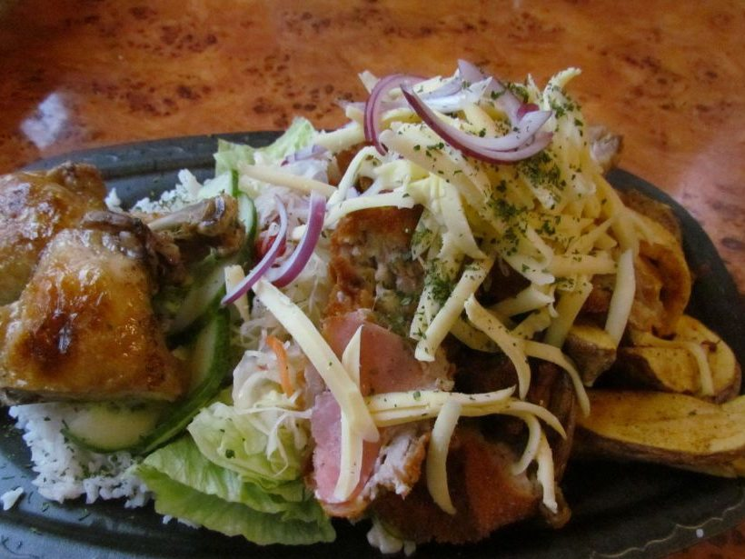
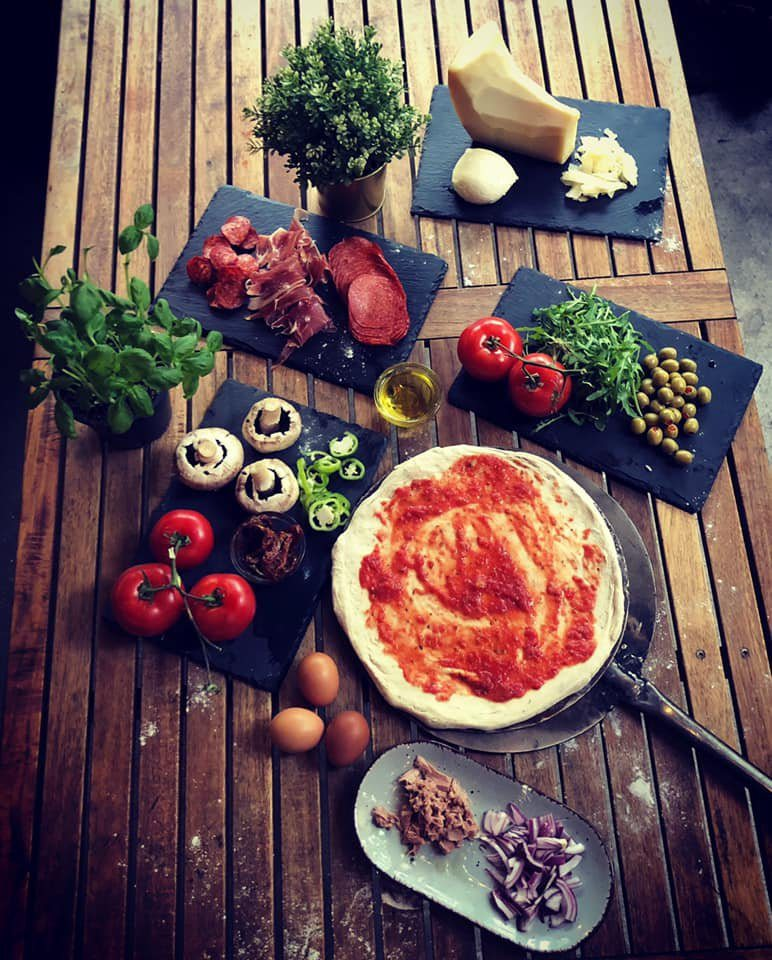
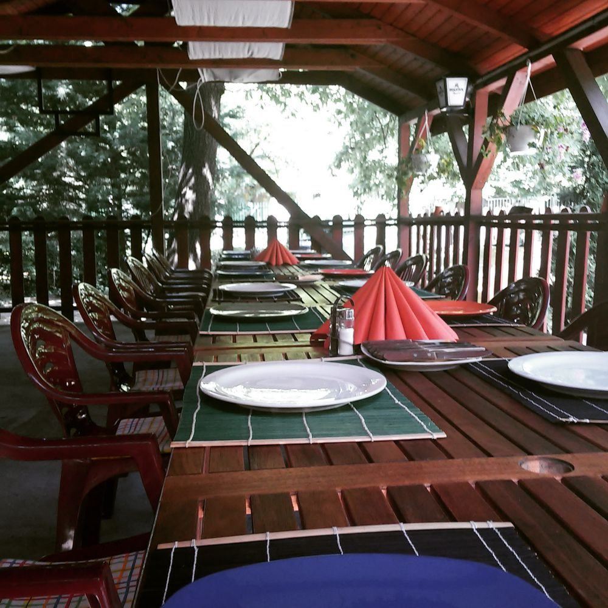
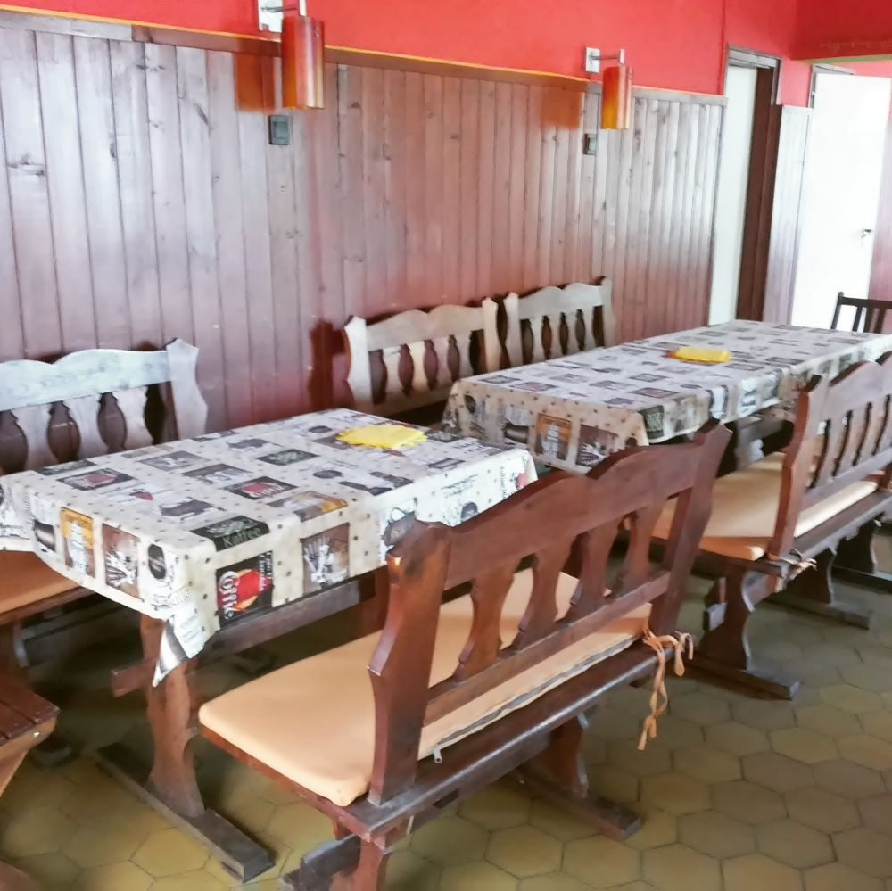
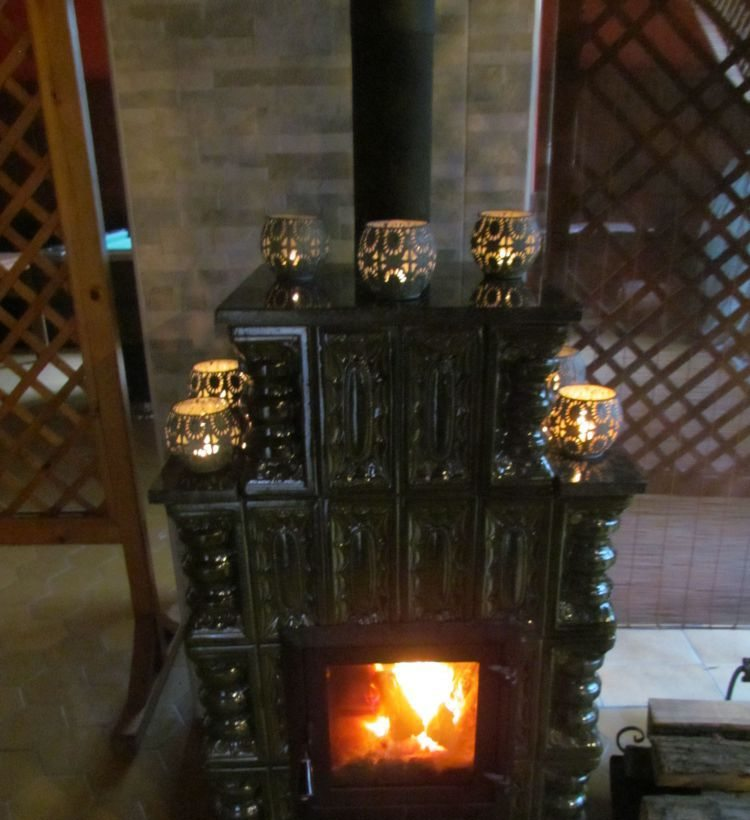

Klotild bőségtál
[IDE JÖN: leírás, adag, ár]

Piliscsaba · Szent László út 48.
Pizza a fák alatti teraszon, utána egy gombóc fagyi vagy egy parti biliárd. Ugorjon be, vagy rendeljen telefonon!
A hely
A Klotild Pizzéria Piliscsabán, a Szent László út 48. alatt található, saját vendégtérrel: aki helyben szeretne enni, bent és a teraszon is talál helyet.
Jó időben a fedett, fából épült terasz a legjobb hely, körülötte fák adnak árnyékot. Bent várja a pult és a fagylaltpult, a hátsó teremben hosszú asztalok vannak, és van egy biliárdasztal is. Hűvösebb napokon a cserépkályha melegít.
Autóval is könnyű ideérni: a bejárat előtt saját parkoló van.
Nézzen körül a galériában →


Extrák
Fedett, fából épült terasz, fák között. Jó időben ide érdemes ülni.
Saját fagylaltpult: egy gombóc a pizza után vagy útközben.
Biliárdasztal helyben: egy parti a barátokkal, amíg sül a pizza.
Parkoló közvetlenül a bejárat előtt. [IDE JÖN: ingyenes-e a parkolás?]
Galéria
Kattintson egy képre a nagyobb nézethez.
Elérhetőség